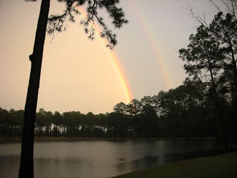

Welcome to Lolly Creek

Lolly Creek Ecological Land Management and Restoration is committed to the growth and maintenance of the native landscape of the South—the Longleaf pine/wiregrass ecosystem. Lolly Creek understands the economic, ecological, and aesthetic values that only a natural forest provides.

An estimated 92 million acres of longleaf pine/wiregrass ecosystem dominated the southern coastal plain when Columbus discovered the new world. Timber harvesting, agriculture, and control of naturally occurring fires led to a great decline of the plant and wildlife species that once were very common. Today, conservationists, research organizations, and private enterprise have joined forces to bring back much of what has been lost. Lolly Creek’s objective is to help landowners restore, maintain, and improve the longleaf/wiregrass landscape for practical, aesthetic, and environmental reasons.